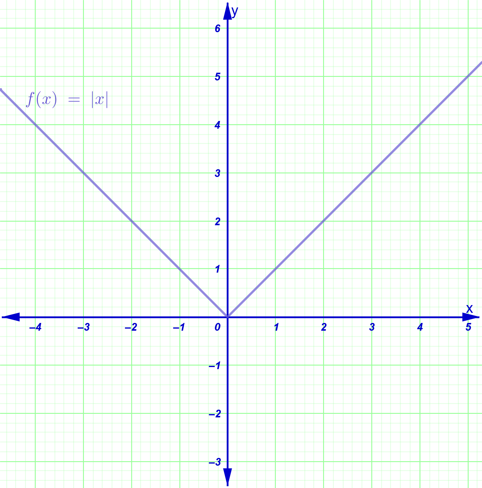
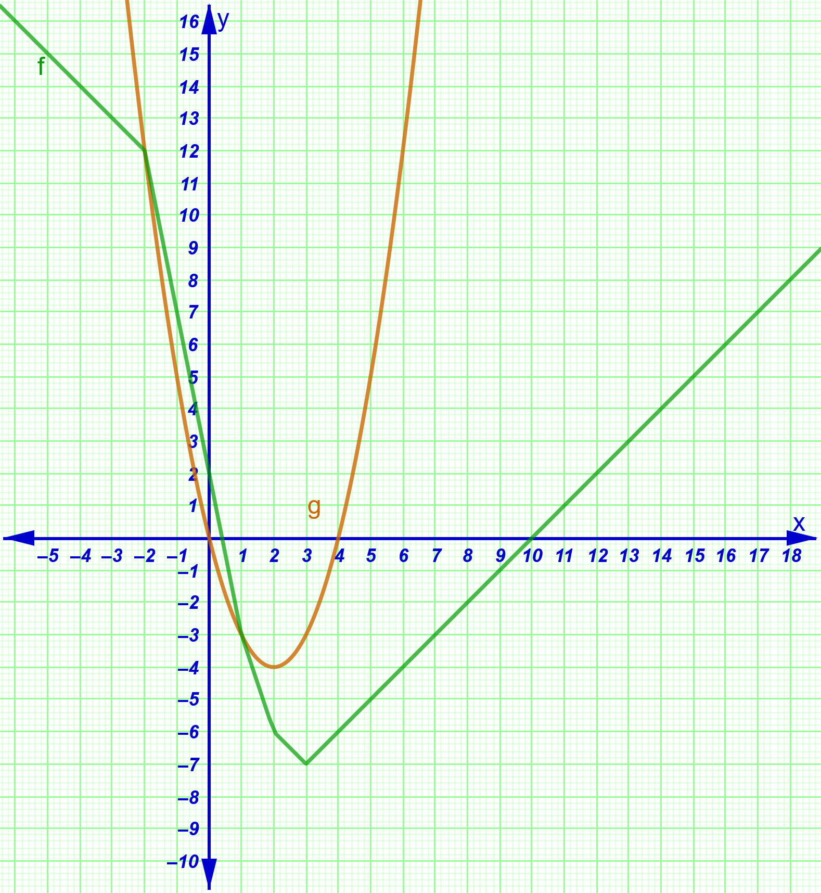
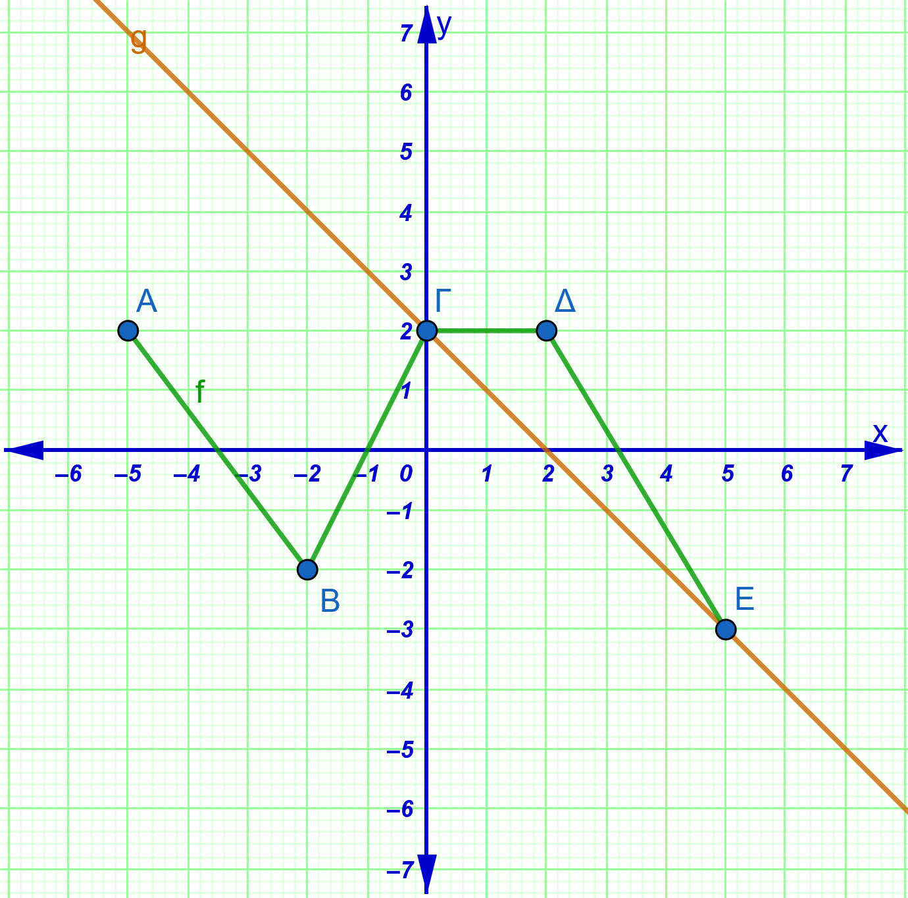
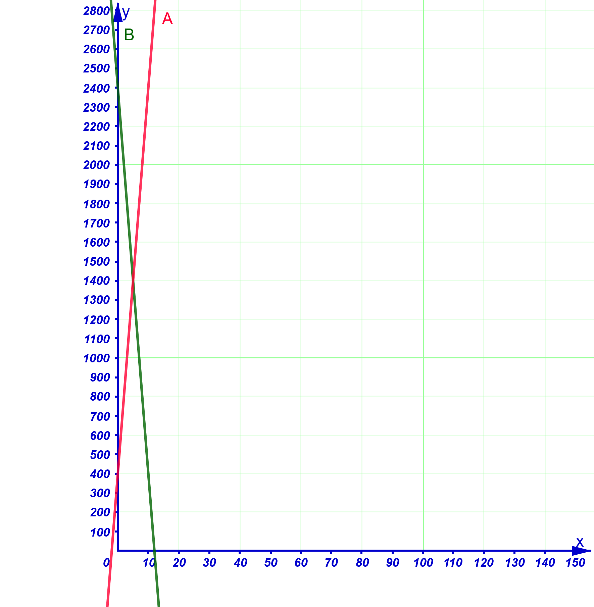
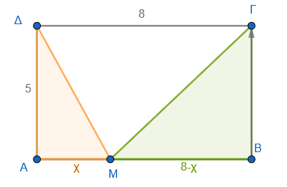

1 Η συνάρτηση ƒ(x) = αx + β
1.1 Η συνάρτηση \(f(x) = \alpha x + \beta\) και η Γραφική της Παράσταση
Θεωρία και Ορισμοί:
Ορισμός: Η συνάρτηση \(f(x) = \alpha x + \beta\) έχει ως πεδίο ορισμού όλο το σύνολο \(\mathbb{R}\) των πραγματικών αριθμών.
Γραφική Παράσταση: Η γραφική παράσταση της συνάρτησης αυτής είναι μια ευθεία (ε) με εξίσωση \(y = \alpha x + \beta\).
Σημεία Τομής με τους Άξονες:
- Τέμνει τον άξονα \(y'y\) στο σημείο \(B(0, \beta)\).
- Τέμνει τον άξονα \(x'x\) στο σημείο \(A(-\dfrac{\beta}{\alpha}, 0)\), υπό την προϋπόθεση ότι \(\alpha \neq 0\).
Μονοτονία:
- Αν \(\alpha > 0\), η συνάρτηση είναι γνησίως αύξουσα σε όλο το \(\mathbb{R}\).
- Αν \(\alpha < 0\), η συνάρτηση είναι γνησίως φθίνουσα σε όλο το \(\mathbb{R}\).
- Αν \(\alpha = 0\), η συνάρτηση παίρνει τη μορφή \(f(x) = \beta\) και ονομάζεται σταθερή, καθώς η τιμή της παραμένει ίδια για κάθε \(x\).
Αλλάξτε την τιμή του α. Τι παρατηρείτε;
Όταν το α>0 ……………. Όταν το α<0 …………………
Όταν το α=0 …………………
Αλλάξτε την τιμή του β. Τι παρατηρείτε; ……………………
Εφαρμογές και Παραδείγματα:
Για να σχεδιάσουμε την ευθεία \(y = \alpha x + \beta\), αρκεί να προσδιορίσουμε δύο σημεία της, συνήθως τα σημεία τομής με τους άξονες.
Παράδειγμα: Για την \(f(x) = 2x + 1\), αν \(x=0\) τότε \(y=1\) (σημείο \((0,1)\)), και αν \(y=0\) τότε \(x=-1/2\) (σημείο \((-1/2, 0)\)).
Ασκήσεις:
- Να βρεθεί ο τύπος της συνάρτησης \(f(x) = \alpha x + \beta\) αν η γραφική της παράσταση διέρχεται από τα σημεία \(A(1, 2)\) και \(B(4, -5)\).
- Δίνεται η \(f(x) = \alpha x + \beta\) με \(f(1) = 3\) και \(f(3) = 7\). Να υπολογίσετε το \(f(11)\).
- Για ποια τιμή του \(\lambda\) το σημείο \(A(2, \lambda + 1)\) ανήκει στην ευθεία \(y = 4x - 1\);
- Να βρείτε τα σημεία τομής της ευθείας \(y = 3x + 2\) με τους άξονες \(x'x\) και \(y'y\).
- Έστω η συνάρτηση \(f(x) = \lambda x + 2\) με \(\lambda < 0\). Να βρείτε την τιμή του \(\lambda\) ώστε το εμβαδόν του τριγώνου που σχηματίζει η γραφική παράσταση με τους άξονες να είναι 2 τ.μ..
1.2 Συντελεστής Διεύθυνσης Ευθείας
Θεωρία και Ορισμοί:
Ορισμός: Συντελεστής διεύθυνσης ή κλίση μιας ευθείας (ε) ονομάζεται η εφαπτομένη της γωνίας \(\omega\) που σχηματίζει η ευθεία με τον άξονα \(x'x\) (\(λ = α = εφω\)).
Γωνία \(\omega\): Είναι η γωνία που διαγράφει η ημιευθεία \(Ax\) όταν στραφεί κατά τη θετική φορά μέχρι να συμπέσει με την ευθεία (ε) (\(0^\circ \le \omega < 180^\circ\)).
Ιδιότητες:
- Αν \(\alpha > 0\), η γωνία \(\omega\) είναι οξεία (\(0^\circ < \omega < 90^\circ\)).
- Αν \(\alpha < 0\), η γωνία \(\omega\) είναι αμβλεία (\(90^\circ < \omega < 180^\circ\)).
- Αν \(\alpha = 0\), η ευθεία είναι παράλληλη στον \(x'x\) και \(\omega = 0^\circ\).
- Αν \(\omega = 90^\circ\) (κάθετη στον \(x'x\)), ο συντελεστής διεύθυνσης δεν ορίζεται.
Υπολογισμός από δύο σημεία: Αν η ευθεία διέρχεται από τα \(A(x_1, y_1)\) και \(B(x_2, y_2)\), τότε \(\lambda = \dfrac{y_2 - y_1}{x_2 - x_1}\).
Ασκήσεις:
- Να βρείτε τη γωνία \(\omega\) που σχηματίζει η ευθεία \(y = \sqrt{3}x - 6\) με τον άξονα \(x'x\).
- Να βρείτε τον συντελεστή διεύθυνσης της ευθείας που διέρχεται από τα σημεία \(A(2, 4)\) και \(B(-2, 0)\).
- Να βρείτε τη γωνία \(\omega\) της ευθείας \(y = -x + 7\).
- Να βρείτε την εξίσωση της ευθείας που έχει κλίση \(\alpha = -1\) και τέμνει τον \(y'y\) στο σημείο \(B(0, 2)\).
- Να βρεθεί η κλίση της ευθείας \(4x - 6y + 12 = 0\).
1.3 Η συνάρτηση \(f(x) = \alpha x\)
Θεωρία και Ορισμοί:
Ορισμός: Είναι η ειδική περίπτωση της \(f(x) = \alpha x + \beta\) όπου \(\beta = 0\).
Χαρακτηριστικά: Η γραφική της παράσταση είναι μια ευθεία που διέρχεται από την αρχή των αξόνων \(O(0, 0)\).
Ειδικές Περιπτώσεις:
- Αν \(\alpha = 1\), έχουμε την ευθεία \(y = x\), η οποία είναι η διχοτόμος της 1ης και 3ης γωνίας των αξόνων (\(\omega = 45^\circ\)).
- Αν \(\alpha = -1\), έχουμε την ευθεία \(y = -x\), η οποία είναι η διχοτόμος της 2ης και 4ης γωνίας των αξόνων (\(\omega = 135^\circ\)).
Αλλάξτε την τιμή του α
Ασκήσεις:
- Να βρεθεί η τιμή του \(\kappa\) ώστε η ευθεία \(y = 3x + \kappa^2 - 9\) να διέρχεται από την αρχή των αξόνων.
- Να βρείτε την εξίσωση της ευθείας που διέρχεται από το \(O(0, 0)\) και το σημείο \(P(-1, 2)\).
- Να αποδείξετε ότι η συνάρτηση \(f(x) = \alpha x\) είναι περιττή.
- Να σχεδιάσετε στο ίδιο σύστημα αξόνων τις ευθείες \(y = x\) και \(y = -x\).
- Να μελετήσετε τη μονοτονία της συνάρτησης \(f(x) = -3x\).
1.4 Σχετικές Θέσεις Δύο Ευθειών
Θεωρία και Ορισμοί:
Έστω δύο ευθείες \(\epsilon_1: y = \alpha_1 x + \beta_1\) και \(\epsilon_2: y = \alpha_2 x + \beta_2\).
Παράλληλες (\(\epsilon_1 \parallel \epsilon_2\)): Ισχύει όταν \(\alpha_1 = \alpha_2\) και \(\beta_1 \neq \beta_2\).
Ταυτιζόμενες: Ισχύει όταν \(\alpha_1 = \alpha_2\) και \(\beta_1 = \beta_2\).
Τεμνόμενες: Ισχύει όταν \(\alpha_1 \neq \alpha_2\).
Κάθετες (\(\epsilon_1 \perp \epsilon_2\)): Ισχύει όταν το γινόμενο των συντελεστών διεύθυνσής τους είναι \(-1\) (\(\alpha_1 \cdot \alpha_2 = -1\)).
Αλλάξτε τις τιμές των \(α_1\), \(α_2\), \(β_1\), \(β_2\) σύμφωνα με την θεωρία ώστε να καταστήσετε τις ευθείες
Παράλληλες
Τεμνόμενες
Κάθετες
Ταυτιζόμενες
Επιλέξτε το σημείο του δρομέα και μετά με πατημένο το Shift + > ή Shift + < αλλάζετε την τιμή του.
Ασκήσεις:
- Να βρεθεί το \(\lambda\) ώστε οι ευθείες \(y = (\lambda^2 + 2)x + \lambda\) και \(y = 3\lambda x - 2\) να είναι παράλληλες.
- Να βρεθεί το \(\lambda\) ώστε οι ευθείες \(y = (2\lambda - 1)x + 2\) και \(y = (\lambda + 1)x - 6\) να είναι κάθετες.
- Να βρείτε το \(\mu\) ώστε η ευθεία \(y = x + 1 - \mu\) να είναι παράλληλη στον άξονα \(x'x\).
- Να βρείτε το κοινό σημείο των ευθειών \(2x - 3y = 1\) και \(x + y = 2\).
- Δίνονται οι ευθείες \(\epsilon_1: y = |2\alpha - 3|x + 4\) και \(\epsilon_2: y = |1 - \alpha|x - 2\). Να βρεθούν οι τιμές του \(\alpha\) ώστε να είναι παράλληλες.
1.5 Η συνάρτηση \(f(x) = |x|\)
Θεωρία και Ορισμοί:
Ορισμός: Η συνάρτηση ορίζεται ως \(f(x) = x\) αν \(x \ge 0\) και \(f(x) = -x\) αν \(x < 0\).
Γραφική Παράσταση: Αποτελείται από δύο ημιευθείες (τις διχοτόμους της 1ης και 2ης γωνίας των αξόνων) που ενώνονται στην αρχή \(O(0, 0)\), σχηματίζοντας σχήμα “V”.
Ιδιότητες:
- Είναι άρτια συνάρτηση, με άξονα συμμετρίας τον \(y'y\).
- Είναι γνησίως φθίνουσα στο \((-\infty, 0]\) και γνησίως αύξουσα στο \([0, +\infty)\).
- Παρουσιάζει ελάχιστο στο \(x = 0\) με τιμή \(f(0) = 0\).

Ασκήσεις:
- Να σχεδιάσετε τη γραφική παράσταση της \(f(x) = |x|\) και να λύσετε γραφικά την εξίσωση \(|x| = 2\).
- Να λύσετε γραφικά την ανίσωση \(|x| > 2\).
- Να σχεδιάσετε τη γραφική παράσταση της συνάρτησης \(f(x) = |x - 2| + 1\) (μετατόπιση της \(|x|\)).
- Να γράψετε χωρίς το σύμβολο της απόλυτης τιμής τη συνάρτηση \(f(x) = |x + 1| + |x|\) και να τη σχεδιάσετε.
- Πώς ερμηνεύεται γεωμετρικά η παράσταση \(|x - 2|\);
1.6 Ασκήσεις
- Τι γωνία σχηματίζουν με τον άξονα \(x'x\) οι παρακάτω ευθείες:
- α. \(y = \dfrac{\sqrt{3}}{3}x + 5\)
- β. \(y = -x - 3\)
- Ποια είναι η κλίση των παρακάτω ευθειών που διέρχονται από τα σημεία:
- α. \(A(2, 4)\) και \(B(4, 8)\)
- β. \(A(-1, 2)\) και \(B(3, -2)\)
- Ποια είναι η εξίσωση της ευθείας όταν:
- α. Έχει κλίση \(a = 2\) και τέμνει τον άξονα \(y'y\) στο σημείο \(B(0, -3)\).
- β. Σχηματίζει με τον άξονα \(x'x\) γωνία \(\omega = 135^\circ\) και τέμνει τον άξονα \(y'y\) στο σημείο \(B(0, 4)\).
- γ. Είναι παράλληλη με την ευθεία \(y = -3x + 1\) και διέρχεται από το σημείο \(A(2, 5)\).
- Ποια είναι η εξίσωση της ευθείας όταν διέρχεται από τα σημεία:
- α. \(A(1, 5)\) και \(B(2, 7)\)
- β. \(A(0, 3)\) και \(B(4, 3)\)
- γ. \(A(2, 1)\) και \(B(2, 5)\)
Σε μια κλίμακα μέτρησης μήκους σε ίντσες (\(I\)) και εκατοστά (\(C\)), γνωρίζουμε ότι τα \(0\) εκατοστά αντιστοιχούν σε \(0\) ίντσες και τα \(10\) εκατοστά αντιστοιχούν σε περίπου \(3,94\) ίντσες. Να βρείτε τη γραμμική σχέση της μορφής \(I = a \cdot C\) που συνδέει τα εκατοστά με τις ίντσες. Αν ένα αντικείμενο έχει μήκος \(50\) εκατοστά, πόσες ίντσες είναι;
Να κάνετε την γραφική παράσταση της συνάρτησης: \[f(x) = \begin{cases} 2x + 4, & \text{αν } x < -1 \\ 2, & \text{αν } -1 \le x < 2 \\ -x + 4, & \text{αν } x \ge 2 \end{cases}\]
Δίνεται η γραφική παράσταση των συναρτήσεων \(f(x)\) και \(g(x)\). Να λύσετε γραφικά:

- α. Τις εξισώσεις \(g(x) = 4\) , \(f(x)=12\), \(f(x)=3\) και \(g(x) = f(x)\).
- β. Τις ανισώσεις \(g(x) > 0\), \(g(x)<-3\), \(f(x) >-6\) και \(g(x) \ge f(x)\) (Προσοχή! δεν είναι μόνο ένα διάστημα).
- Κάντε τα παρακάτω
- α. Σχεδιάστε στο ίδιο σύστημα συντεταγμένων τις γραφικές παραστάσεις των συναρτήσεων \(f(x) = |x-1|\) και \(g(x) = 2\) και με τη βοήθεια αυτών να λύσετε τις ανισώσεις: \(|x-1| < 2\) και \(|x-1| \ge 2\).
- β. Να αποδείξετε αλγεβρικά τις απαντήσεις σας στο προηγούμενο ερώτημα.
- Η πολυγωνική γραμμή \(AB\Gamma\Delta E\) του παρακάτω σχήματος είναι η γραφική παράσταση μιας συνάρτησης \(f\) που είναι ορισμένη στο διάστημα \([-5, 5]\). (η γραμμή περνά από τα σημεία \(A(-5, 2)\), \(B(-2, -2)\), \(\Gamma(0, 2)\), \(\Delta(2, 2)\) και \(E(5, -3)\)).

- α. Να βρείτε την τιμή της πολύκλαδης συνάρτησης \(f\) σε κάθε διάστημα με \(x \in [-5, 5]\).
- β. Να λύσετε τις εξισώσεις: \(f(x) = 2\), \(f(x) = 0\) και \(f(x) = -1\).
- γ. Να βρείτε την εξίσωση \(g(x)\) της ευθείας \(ΓE\) και στη συνέχεια να λύσετε γραφικά την ανίσωση \(f(x) \ge g(x)\).
- Ένα μυρμήγκι κινείται κατά μήκος της ευθείας \(y = 2x + 4\) και όταν φτάνει στον άξονα \(x'x\) αρχίζει να κινείται πάνω στην ευθεία η οποία εναι συμμετρική ώς προς την κάθετη που περνάει από το σημείο τομής της y με τον άξονα \(x'x\). Να γράψετε την εξίσωση της ευθείας κατά μήκος της οποίας κινείται τώρα το μυρμήγκι.
λύση
- Εύρεση σημείου τομής: Η ευθεία \(y = 2x + 4\) τέμνει τον άξονα \(x'x\) όταν \(y = 0\). \(0 = 2x + 4 \Rightarrow 2x = -4 \Rightarrow x = -2\). Το σημείο τομής είναι το \(A(-2, 0)\).
- Κατανόηση της συμμετρίας: Η “κάθετη που περνά από το σημείο τομής” είναι ο άξονας \(y'y\) (αφού η ευθεία \(x = -2\) είναι παράλληλη, αλλά εδώ αναφερόμαστε στη συμμετρία ως προς την κατακόρυφη ευθεία \(x=-2\)). Η ανάκλαση μιας ευθείας με κλίση \(λ\) ως προς μια κατακόρυφη ευθεία οδηγεί σε μια ευθεία με κλίση \(-λ\).
- Εύρεση νέας εξίσωσης: Η νέα ευθεία έχει κλίση \(λ' = -2\) και διέρχεται από το \(A(-2, 0)\). \(y - 0 = -2(x - (-2)) \Rightarrow y = -2(x + 2) \Rightarrow y = -2x - 4\).
- Σε μια δεξαμενή Α υπάρχουν \(400\) λίτρα νερού. Μια δεξαμενή Β που περιέχει \(2400\) λίτρα νερού αρχίζει να αδειάζει το νερό στη δεξαμενή Α. Αν η παροχή της δεξαμενής Β προς την δεξαμενή Α είναι \(200\) λίτρα το λεπτό και η δεξαμενή Α χωράει όλη την ποσότητα της δεξαμενής Β:
- Α. Να βρείτε τις συναρτήσεις που εκφράζουν, συναρτήσει του χρόνου \(t\) (σε λεπτά), την ποσότητα του νερού:
- α. στην δεξαμενή Β και
- β. στη δεξαμενή Α.
- Β. Να παραστήσετε γραφικά τις παραπάνω συναρτήσεις και να βρείτε τη χρονική στιγμή κατά την οποία η δεξαμενή Β και η δεξαμενή Α έχουν την ίδια ποσότητα νερού.
Λύση
Α. Κατασκευή Συναρτήσεων:
α) Δεξαμενή Β: Η δεξαμενή ξεκινά με 2400 λίτρα και χάνει 200 λίτρα κάθε λεπτό. Επομένως, η ποσότητα μετά από \(t\) λεπτά είναι: \[f_B(t) = 2400 - 200t\]
(Η συνάρτηση ορίζεται για \(0 \le t \le 12\), όπου \(t=12\) είναι ο χρόνος που αδειάζει πλήρως η Β).
β) Δεξαμενή Α: Η δεξαμενή ξεκινά με 400 λίτρα και δέχεται 200 λίτρα κάθε λεπτό. Επομένως, η ποσότητα μετά από \(t\) λεπτά είναι: \[f_A(t) = 400 + 200t\]
Β. Επίλυση:
Για να βρούμε πότε οι δύο δεξαμενές έχουν την ίδια ποσότητα, θέτουμε \(f_B(t) = f_A(t)\): \[2400 - 200t = 400 + 200t\] \[2400 - 400 = 200t + 200t\] \[2000 = 400t\] \[t = \frac{2000}{400} = 5\]
**Γραφική παράσταση:
**
- Η \(f_B(t)\) είναι μια ευθεία που ξεκινά από το σημείο \((0, 2400)\) και καταλήγει στο \((12, 0)\).
- Η \(f_A(t)\) είναι μια ευθεία που ξεκινά από το σημείο \((0, 400)\) και είναι αύξουσα.
- Οι δύο γραμμές τέμνονται στο σημείο με συντεταγμένες \((5, 1400)\). Άρα, στα 5 λεπτά και οι δύο δεξαμενές περιέχουν 1400 λίτρα νερού.
- Έστω ορθογώνιο \(ABΓΔ\) με πλευρές \(AB = 8\) και \(AΔ = 5\). Ένα σημείο \(M\) ξεκινά από την κορυφή \(A\) και κινείται πάνω στην πλευρά \(AB\) με κατεύθυνση προς το \(B\). Έστω \(x\) το μήκος της διαδρομής \(AM\).

- Να ορίσετε το πεδίο ορισμού της μεταβλητής \(x\).
- Να εκφράσετε ως συνάρτηση του \(x\) το εμβαδό \(E_1 = f(x)\) του τριγώνου \(AMΔ\).
- Να εκφράσετε ως συνάρτηση του \(x\) το εμβαδό \(E_2 = g(x)\) του τριγώνου \(MBΓ\), όπου το \(Γ\) είναι η απέναντι κορυφή του \(B\).
- Να βρείτε για ποια τιμή του \(x\) τα δύο τρίγωνα έχουν ίσα εμβαδά.
Λύση
Προσδιορισμός Πεδίου Ορισμού
Το σημείο \(M\) κινείται πάνω στο τμήμα \(AB\). Το μήκος του \(AB\) είναι \(8\) μονάδες. Άρα, η απόσταση \(x = AM\) μπορεί να πάρει τιμές από \(0\) (όταν το \(M\) είναι στο \(A\)) έως \(8\) (όταν το \(M\) φτάσει στο \(B\)).
Πεδίο ορισμού: \(x \in [0, 8]\).
Τύπος της συνάρτησης \(f(x)\) για το τρίγωνο \(AMΔ\)
Το τρίγωνο \(AMΔ\) είναι ορθογώνιο στο \(A\). Η βάση του είναι \(AM = x\) και το ύψος του είναι \(AΔ = 5\). \(E_1 = f(x) = \dfrac{1}{2} \cdot \text{βάση} \cdot \text{ύψος} = \dfrac{1}{2} \cdot x \cdot 5 = 2.5x\).
Τύπος της συνάρτησης \(g(x)\) για το τρίγωνο \(MBΓ\)
Το τρίγωνο \(MBΓ\) είναι ορθογώνιο στο \(B\). Η βάση του είναι \(MB\). Αφού όλο το \(AB=8\) και \(AM=x\), τότε \(MB = 8 - x\). Το ύψος του είναι \(BΓ\), το οποίο είναι ίσο με \(AΔ = 5\) (απέναντι πλευρές ορθογωνίου). \(E_2 = g(x) = \dfrac{1}{2} \cdot (8 - x) \cdot 5 = 2.5(8 - x) = 20 - 2.5x\).
Εύρεση του σημείου ισότητας εμβαδών
Θέτουμε \(f(x) = g(x)\):
\(2.5x = 20 - 2.5x\) \(2.5x + 2.5x = 20\) \(5x = 20\) \(x = 4\).
Δηλαδή, όταν το \(M\) είναι το μέσο της πλευράς \(AB\).
Τελική απάντηση
- \(x \in [0, 8]\)
- \(f(x) = 2.5x\)
- \(g(x) = 20 - 2.5x\)
- Τα εμβαδά είναι ίσα όταν \(x = 4\).
- Δύο δεξαμενές νερού \(D_1\) και \(D_2\) περιέχουν η καθεμία \(600\) λίτρα νερού. Την ίδια χρονική στιγμή \(t=0\) αρχίζουμε να αδειάζουμε τις δεξαμενές.
Η \(D_1\) αδειάζει πλήρως σε \(10\) λεπτά με σταθερό ρυθμό.
Η \(D_2\) αδειάζει πλήρως σε \(15\) λεπτά με σταθερό ρυθμό.
- Να βρείτε τις συναρτήσεις \(V_1(t)\) και \(V_2(t)\) που εκφράζουν τον όγκο του νερού σε κάθε δεξαμενή σε συνάρτηση με τον χρόνο \(t\).
- Ποια χρονική στιγμή η δεξαμενή \(D_2\) έχει τριπλάσιο νερό από τη δεξαμενή \(D_1\);
- Αν οι δεξαμενές είχαν αρχικό όγκο \(V_0\), αλλά οι χρόνοι εκκένωσης παρέμεναν \(10\) και \(15\) λεπτά αντίστοιχα, αλλάζει η χρονική στιγμή που η μία έχει τριπλάσιο νερό από την άλλη;
Λύση
Εύρεση των συναρτήσεων \(V(t)\)
Για την \(D_1\): Στο \(t=0, V=600\). Στο \(t=10, V=0\). Η κλίση είναι \(a_1 = \dfrac{0-600}{10-0} = -60\). Άρα \(V_1(t) = 600 - 60t\) για \(t \in [0, 10]\). Για την \(D_2\): Στο \(t=0, V=600\). Στο \(t=15, V=0\). Η κλίση είναι \(a_2 = \dfrac{0-600}{15-0} = -40\). Άρα \(V_2(t) = 600 - 40t\) για \(t \in [0, 15]\).
Επίλυση της εξίσωσης \(V_2(t) = 3 \cdot V_1(t)\)
Αντικαθιστούμε τους τύπους:
\(600 - 40t = 3(600 - 60t)\) \(600 - 40t = 1800 - 180t\) \(180t - 40t = 1800 - 600\) \(140t = 1200\) \(t = \dfrac{1200}{140} = \dfrac{60}{7} \approx 8,57\) λεπτά.
Γενική περίπτωση με αρχικό όγκο \(V_0\)
Οι συναρτήσεις γίνονται \(V_1(t) = V_0 - \dfrac{V_0}{10}t\) και \(V_2(t) = V_0 - \dfrac{V_0}{15}t\).
Θέτουμε \(V_2(t) = 3V_1(t)\):
\(V_0(1 - \dfrac{t}{15}) = 3V_0(1 - \dfrac{t}{10})\)
Διαιρούμε με \(V_0\) (αφού \(V_0 \neq 0\)):
\(1 - \dfrac{t}{15} = 3 - \dfrac{3t}{10}\)
Παρατηρούμε ότι το \(V_0\) απαλείφεται, άρα ο χρόνος είναι ανεξάρτητος του αρχικού όγκου.
Τελικά
- \(V_1(t) = 600 - 60t\), \(V_2(t) = 600 - 40t\).
- \(t = 60/7\) λεπτά.
- Ο χρόνος παραμένει ο ίδιος γιατί το \(V_0\) απλοποιείται στην εξίσωση.
ΚΑΛΗ ΜΕΛΕΤΗ!